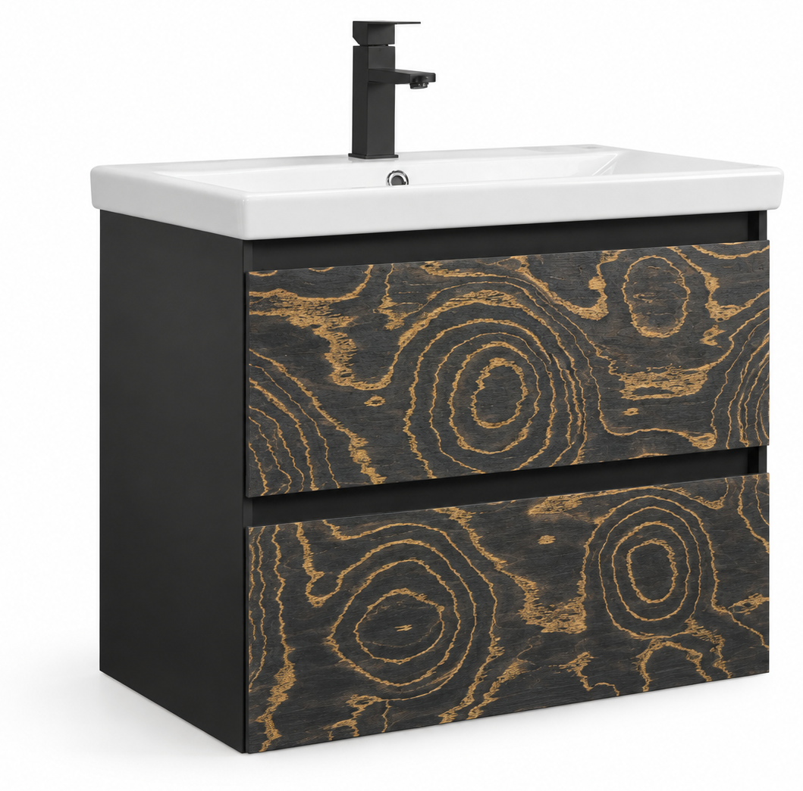

Накладные безручечные фасады. Торцевой спил, тонирование в чёрный, золочение годовых колец.
Комплект из двух фасадов со сквозным рисунком. Зона эксплуатации — ванная комната.

| Изделие | Фасады верхнего (Ф1) и нижнего (Ф2) ящиков подвесной тумбы под умывальник |
|---|---|
| Основной маршрут | А — МДФ влагостойкий + шпон торцевого спила + морение + золочение колец + ПУ-лак |
| Дубль для серии | Б — грунт + UV-печать сквозного скана + ПУ/UV-лак |
| Базовый размер | Тумба 800: Ф1 764×180×18 мм, Ф2 764×312×18 мм, зазор 4 мм |
| Дата | 28 октября 2026 г. (Europe/Minsk) |
| Статус | Рабочая редакция для запуска в производство. Внутренние ТУ предприятия имеют приоритет, если ужесточают требования. |
Документ вводится в действие с даты утверждения главным технологом. Изменения — только новой редакцией с сохранением архива ред. 00.
| Должность | ФИО | Подпись | Дата |
|---|---|---|---|
| Разработал, технолог | |||
| Проверил, нач. цеха фасадов | |||
| Согласовал, нач. ОТК | |||
| Утвердил, главный технолог |
Техпроцесс распространяется на изготовление комплекта из двух фасадов ящиков подвесной тумбы под умывальник.
Не входит в данный ТП (смежные маршруты): корпус, ящики, присадка направляющих в корпус, умывальник, смеситель, упаковка гарнитура.
| Признак на референсе | Технологическое следствие |
|---|---|
| Концентрические годовые кольца, «спил ствола» | Лицевая — шпон торцевого спила (дуб / ясень / олива) либо UV-печать скана спила |
| Рисунок непрерывно переходит с верхнего фасада на нижний | Пара кроится из одной облицованной плиты; маркировка комплекта обязательна |
| Ручек нет, фасады плоские | Открытие TIP-ON / Push-to-open; присадка только с тыльной стороны |
| Чёрный фон, золотистые кольца | Морение + заполнение ранней древесины золотистой пастой, затем закрытый ПУ-лак |
| Ванная, накладной умывальник | Влагостойкий МДФ, герметизация всех кромок и тыла, химически стойкий лак |
| Код | Маршрут | Когда применять |
|---|---|---|
| А | МДФ + шпон торцевого спила + морение + золочение колец + ПУ-лак | Премиум, как на фото. Живой рисунок, тактильность древесины |
| Б | МДФ + грунт + UV-печать сквозного скана + ПУ/UV-лак | Серия, повторяемость декора, проще влагозащита |
| В | Массивный торцевой щит + стабилизация | Штучное, не серия. В ванной не рекомендуется без полной стабилизации |
Внутренние ТУ предприятия на мебель для ванных — в части герметизации кромок и тыла — имеют приоритет над данным ТП, если ужесточают требования.
Щитовой накладной фасад ящика, без фрезерованной ручки, без свесов по боковинам корпуса (заподлицо с наружной плоскостью боковин ±0,5 мм).
Состав по толщине, маршрут А (снаружи внутрь):
| 1 | ПУ-лак матовый, 2 слоя, суммарно 80–120 г/м² |
| 2 | Изоляционный ПУ-грунт |
| 3 | Золотистый заполнитель в годовых кольцах |
| 4 | Морилка (чёрный / венге) |
| 5 | Шпон торцевого спила 0,9–1,5 мм на флизелине |
| 6 | Клей PUR или ПВА D4 |
| 7 | МДФ влагостойкий 18 мм |
| 8 | Тыл: грунт + ПУ-лак-изолятор (не оставлять сырой МДФ) |
Кромка: ABS 1,0 мм, клей PUR, цвет чёрный (близкий RAL 9005). После кромления допускается лёгкое тонирование торца, чтобы стык шпон/кромка не читался светлой линией.
Размеры — пример для корпуса наружной ширины 768 мм, высоты ниши фасадов 500 мм, толщины фасада 18 мм. Для других ширин пересчёт линейный, зазоры не менять.
| Позиция | Обозн. | Длина, мм | Высота, мм | Толщ., мм | Кол-во |
|---|---|---|---|---|---|
| Фасад верхнего ящика | Ф1 | 764 | 180 | 18 | 1 |
| Фасад нижнего ящика | Ф2 | 764 | 312 | 18 | 1 |
| Зазор между фасадами | — | — | 4 | — | — |
| Зазор под умывальником | — | — | 4 | — | — |
| Боковой свес | — | 0 (заподлицо) | — | — | — |
Проверка: 180 + 4 + 312 + 4 = 500 мм.
Заготовка-близнец до чистового реза (маршрут А): 768 × 500 × 18 мм — одна плита на пару. Чистовой рез пары — одним проходом, чтобы кольца совпали.
Расход — технологический, с учётом припусков и потерь. Уточнять по фактическому КИМ раскроя.
| № | Материал | Спецификация | Норма | Примечание |
|---|---|---|---|---|
| 1 | МДФ влагостойкий | 18 мм, E1, ρ ≥ 720 кг/м³, влажность 6–10 % | 0,42 м² | EGGER MDF.RWH / аналог Kronospan MR |
| 2 | Шпон торцевого спила на флизелине | дуб / ясень / олива, 0,9–1,5 мм, сорт А | 0,50 м² | Рисунок на пару; стык полос на фасаде запрещён |
| 3 | Клей облицовки | PUR-расплав или ПВА D4 | 120–160 г/м² | Для ванной КФ-клеи не использовать |
| 4 | Кромка ABS | 1,0×23 мм, чёрный | 3,2 м пог. | PUR на кромкооблицовочном |
| 5 | Клей кромки | PUR | по станку | Температура бачка — по ТУ клея |
| 6 | Морилка водная / спиртовая | чёрный, межслойно совместима с ПУ | 40–70 г/м² | Проба на обрезке той же партии шпона |
| 7 | Паста золочения колец | металлик золото/янтарь, воск или акрил | 8–15 г/комплект | Только в поры, не плёнкой по пласты |
| 8 | Грунт ПУ изоляционный | Renner / Sayerlack | 80–100 г/м² × 2 | Лицо и тыл; тыл обязателен |
| 9 | Эмаль/лак ПУ матовый | Renner / Sayerlack, 10–20 GU | 80–120 г/м² лицо; 60–80 г/м² тыл | Химстойкость EN 12720, класс ≥ 3 |
| 10 | Абразив | P120 / P180 / P240 / P320 / P400 | по факту | Не шлифовать насквозь шпон |
| 11 | Герметик отверстий | ПУ-грунт или мебельный воск | 2–4 г | После присадки |
Входной контроль шпона: разрывы флизелина, пятна клея, выпады, синева, расхождение колец внутри листа. Партия без эталонного образца отделки — на линию не выдавать.
| Параметр | Значение |
|---|---|
| Температура цеха облицовки и отделки | 18–24 °C |
| Относительная влажность | 40–60 % |
| Акклиматизация плиты и шпона | ≥ 48 ч в цехе, в стопе с прокладками |
| Выдержка после прессования до формата | ≥ 4 ч (PUR), ≥ 8 ч (ПВА D4) |
| Выдержка после финишного лака до сборки | ≥ 16 ч; полная химстойкость — 7 суток |
| Класс чистоты окрасочной зоны | без пыли после P400, обдув обязателен |
| № | Операция | Оборудование | Разряд | Норма, мин |
|---|---|---|---|---|
| 005 | Входной контроль, акклиматизация | участок хранения | контр. | — |
| 010 | Раскрой МДФ в заготовку-близнец | форматно-раскроечный / beam saw | 3 | 3 |
| 015 | Калибровка пластей | калибровально-шлифовальный | 3 | 2 |
| 020 | Подбор и раскрой шпона, маркировка пары | стол шпона, линейка, нож | 4 | 8 |
| 025 | Нанесение клея, прессование | горячий / вакуумный пресс | 4 | 6* |
| 030 | Выдержка | стеллаж | — | 4–8 ч |
| 035 | Снятие свесов шпона | кромкообрез / ручной фрезер с копиром | 3 | 3 |
| 040 | Чистовой форматный рез пары на Ф1 и Ф2 | форматный / ЧПУ | 4 | 4 |
| 045 | Кромление 4 сторон PUR + ABS | кромкооблицовочный PUR | 3 | 4 |
| 050 | Присадка тыльная | присадочный ЧПУ / кондуктор | 3 | 2 |
| 055 | Герметизация отверстий | кисть / дозатор | 3 | 1 |
| 060 | Шлифование лица P180–P240 | шлиф. станок / эксцентрик | 4 | 5 |
| 065 | Обеспыливание, грунт тыла | окрасочная линия | 3 | 4 |
| 070 | Морение лица | ручное / распыл | 4 | 6 |
| 075 | Золочение колец, съём излишков | ручное, пад | 5 | 12 |
| 080 | Изоляционный грунт лица | линия Renner / Sayerlack | 3 | 5 + сушка |
| 085 | Промежуточное шлифование P320–P400 | эксцентрик | 4 | 4 |
| 090 | Финишный ПУ-лак лица и контрольный слой тыла | линия | 3 | 6 + сушка |
| 095 | Выдержка | стеллаж | — | ≥ 16 ч |
| 100 | ОТК, комплектация пары, упаковка фасадов | стол ОТК | контр. | 4 |
* Машинное время загрузки; цикл пресса 8–15 мин.
PUR (предпочтительно для ванной): граммаж 120–140 г/м²; давление 0,4–0,6 МПа; температура плит 80–100 °C (по ТУ клея); выдержка под давлением 2–4 мин.
ПВА D4 (допустимо): граммаж 140–160 г/м²; давление 0,5–0,7 МПа; холодный пресс ≥ 30 мин или горячий 90–100 °C, 3–5 мин; открытое время клея не превышать.
Контроль: нет пузырей, пробития клея на лицо, сдвига шпона. Сдвиг > 2 мм — перекладка до полимеризации, иначе брак.
Брак операции: плёнка металлика на пласты, разводы, попадание пасты на ABS-кромку.
Режим как для крашеных фасадов, с поправкой на шпон:
Не использовать нитролаки: в ванной — низкая химстойкость и риск поднятия ворса шпона.
Комплект не расформировывать. Ф1 и Ф2 хранить лицом друг к другу через вспененную прокладку, маркировкой наружу.
Применяется, когда нужна повторяемость «того же» спила на всей коллекции или золочение (оп. 075) не проходит по такту.
| № | Операция | Ключевой режим |
|---|---|---|
| 010 | Раскрой МДФ, кромление PUR+ABS, присадка, герметизация | как А |
| 020 | Калибр P150–P180, обеспыливание | — |
| 030 | Грунт ПУ 2–3 слоя (существующий конвейер) | как крашеный фасад |
| 040 | Шлиф P400, косой свет | нет рисок, пор |
| 050 | UV-печать | 600–1200 dpi; один файл раскладки на пару Ф1+Ф2 с зазором 4 мм в макете |
| 060 | Защитный ПУ или UV-лак мат 10–20 GU | химстойкость как А |
| 070 | ОТК совпадения рисунка по стыку ≤ 1,0 мм | печать точнее шпона |
Макет: скан реального торцевого спила 1:1, цветопроба на той же грунтованной плите. Не масштабировать кольца отдельно на Ф1 и Ф2.
| Параметр | Допуск |
|---|---|
| Длина / ширина фасада | ±0,5 мм |
| Толщина | ±0,3 мм |
| Прямоугольность (разность диагоналей) | ≤ 1,0 мм |
| Покоробленность пласты | ≤ 0,5 мм/м |
| Свес кромки, ступенька | не допускается на ощупь |
| Смещение рисунка Ф1 относительно Ф2 по стыку | ≤ 1,5 мм (А), ≤ 1,0 мм (Б) |
| Зазор в изделии между фасадами | 4 ± 0,5 мм |
| Присадка | ±0,2 мм межцентровые |
| Дефект | Причина | Устранение / профилактика |
|---|---|---|
| Кольца не сходятся на стыке Ф1/Ф2 | Резали порознь, сдвинули базу | Только парный рез; кондуктор / метка на тыле |
| Прошлифовка до МДФ | Агрессивный шлиф торцевого шпона | P180 max до морения; контроль косым светом |
| Вскипание / пузыри под шпоном | Влажный МДФ, пыль, мало клея | Акклиматизация, обдув, граммаж 120+ |
| Побеление кромки во влажной камере | EVA вместо PUR, непроклей ABS | Только PUR; тест каплей |
| Жёлтый туман по чёрному фону | Паста не снята с пласты | Съём падом до грунта; не покрывать лаком «грязное» золото |
| Поднятие ворса после морилки | Водная морилка без грунта-изолятора | Спиртовая морилка или грунт-изолятор до контраста; межслой P320 |
| Трещины торцевого шпона | Сухой шпон, высокий нагрев пресса | Флизелин, t° по ТУ, не выше 100 °C без необходимости |
| Коробление фасада | Несимметричная отделка (тыл сырой) | Обязательный изолятор тыла |
| Разбухание у присадки | Не герметизировали отверстия | Грунт/воск в каждое отверстие |
Рекомендуемые инварианты коллекции: зазор 4 мм, толщина 18 мм, кромка ABS 1,0 PUR, TIP-ON.
Центровку «ядра» спила держать на вертикальной оси, ядро — на Ф2, верх колец заходит на Ф1 (как на референсе).
| Код выкраски | Описание |
|---|---|
| Спил-чёрный-01 | Фон — глубокий чёрный, без коричневого подтона |
| Спил-золото-01 | Кольца — тёплое золото/янтарь, не лимон и не бронза |
| Спил-мат-01 | 10–20 GU, без воска поверх лака |
Выкраски хранить на тех же МДФ+шпон. Обновлять раз в 12 месяцев или при смене партии шпона / ЛКМ.